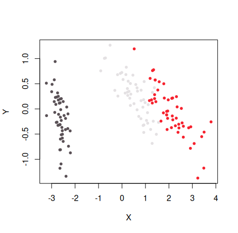

An R Package for Visualization of 2D Datasets.
Visualizing datasets in 2D (e.g. via PCA, Sammon Mapping, t-SNE) is much more informative if the points are colored, using something like:
- Factor levels mapped to different colors.
- A numeric value mapped to a color scale.
- A string encoding a color.
This package is to make doing that a bit easier, using the graphics::plot function, or via the plotly JavaScript library. If you don’t specify a specific column to color by, it will attempt to find a suitable factor or color column automatically, using the last suitable column found, so you can add a custom column to a dataframe if needed and have it picked out automatically.
Installing
install.packages("pak")
pak::pak("jlmelville/vizier")Example
Create a plot of the first two principal components (PCA) for the iris dataset:
pca_iris <- stats::prcomp(iris[, -5], retx = TRUE, rank. = 2)Simplest use of embed_plot: pass in data frame and it will use the last (in this case, only) factor column it finds and the stable built-in Polychrome 36 categorical palette
embed_plot(pca_iris$x, iris)
Numeric vectors use a sequential HCL Viridis palette by default. Categorical and no-input row colors use Polychrome 36 when R provides it, with an HCL Dynamic fallback. To reverse a generated palette, use rev = TRUE; explicitly supplied per-row colors retain their order.
For more examples, see the Getting started article.
License
GPL (>= 3). The code for the turbo color scheme is from https://gist.github.com/jlmelville/be981e2f36485d8ef9616aef60fd52ab and is licensed under Apache 2.